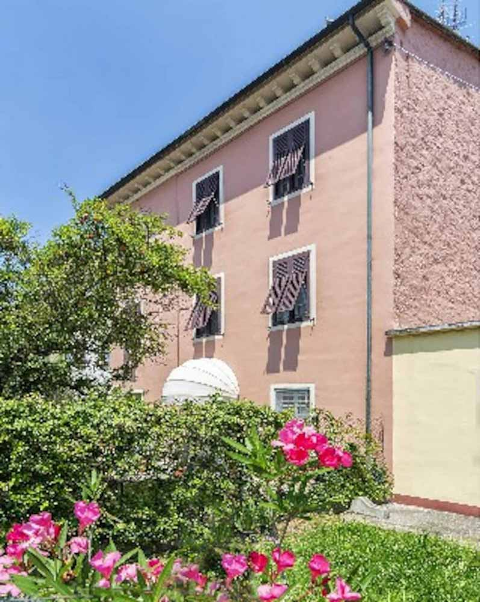
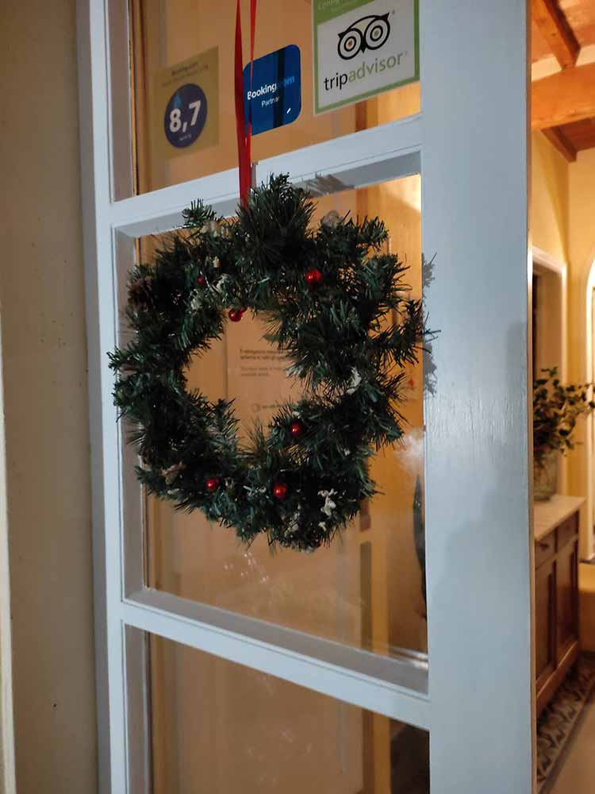
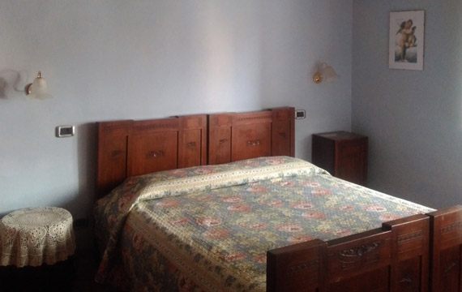
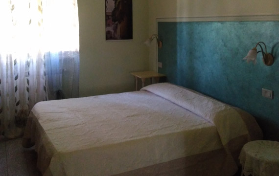
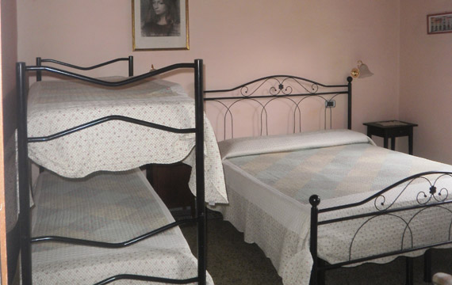
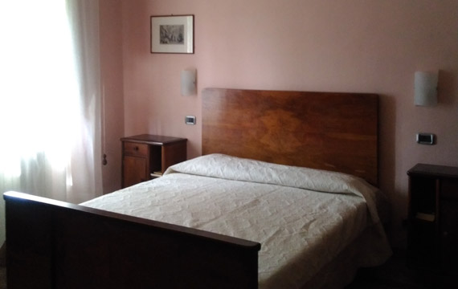
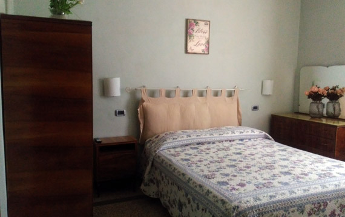
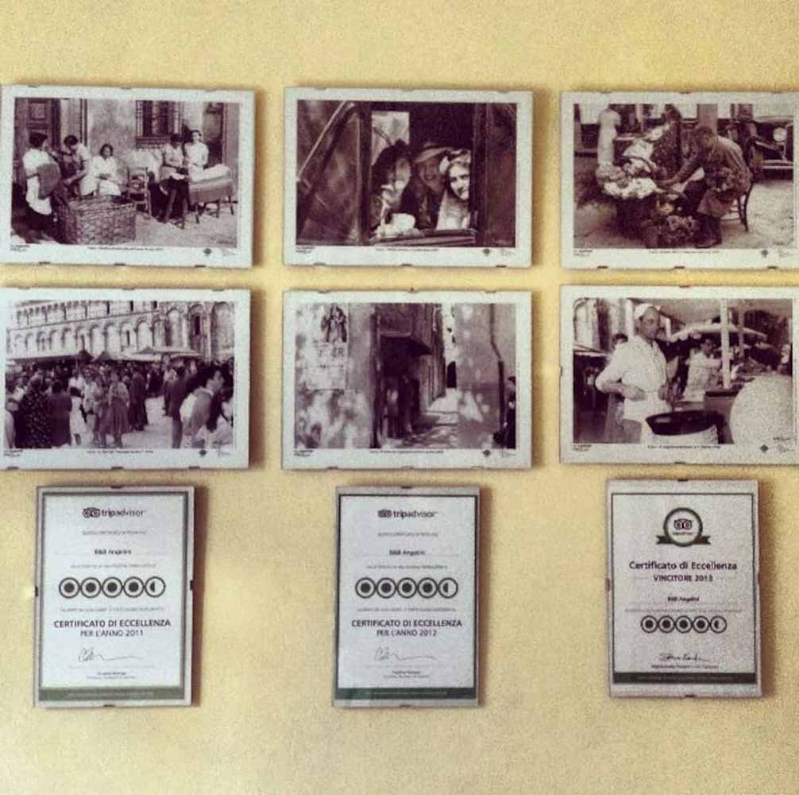

Cinque camere nel vero stile toscano — soffitti in legno, pavimenti in cotto — a 600 metri dal centro storico.
La grande casa costruita dai bisnonni nel 1911 accoglie oggi il B&B Angelini, a 600 metri dal centro storico di Lucca e recentemente ristrutturata.
Ha mantenuto intatto lo stile tipico toscano: soffitti in legno con travicelli e mezzane, pavimenti in cotto e graniglia. Camere ampie e luminose, ognuna con bagno privato.

Doppie, triple e quadruple — tutte ampie, luminose e con bagno privato.






Un ospite anglofono chiede una camera a tarda sera. Il vostro assistente risponde in un istante, nella sua lingua, con disponibilità reali — e trasforma la richiesta in una prenotazione diretta, senza commissioni a nessuna piattaforma.
Italiano, inglese, tedesco, francese. Anche mentre dormite.
Connessione libera in tutta la struttura.
Servita in un bar convenzionato a due passi dal B&B.
Posti dedicati proprio davanti alla struttura.
Camere fresche e pet-friendly, deposito bagagli disponibile.